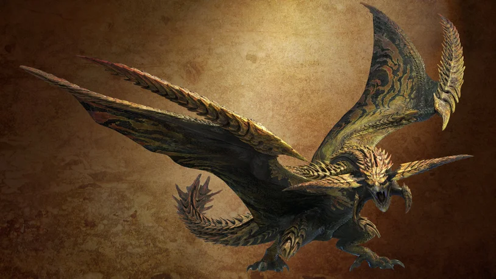
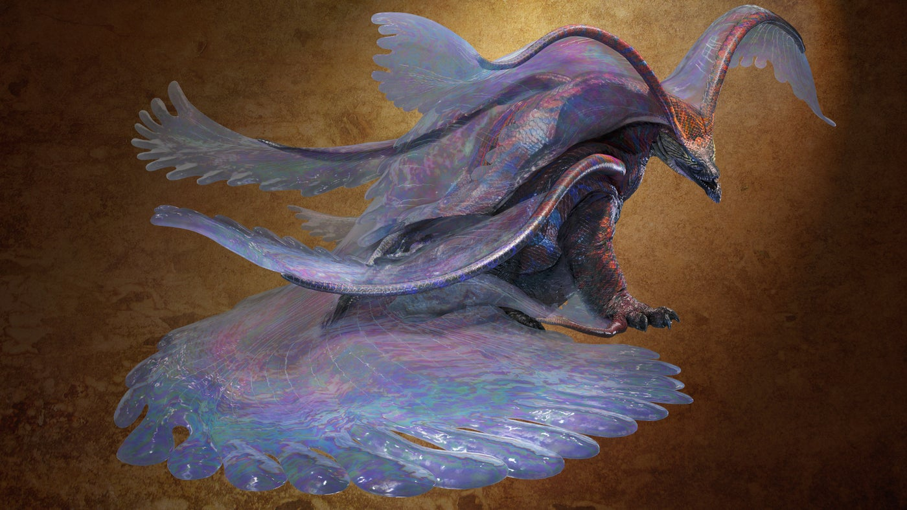
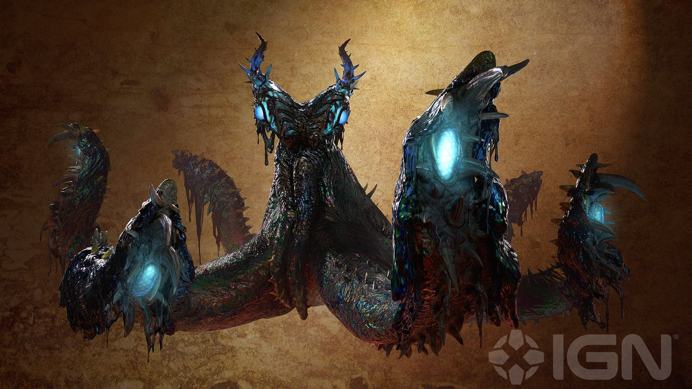
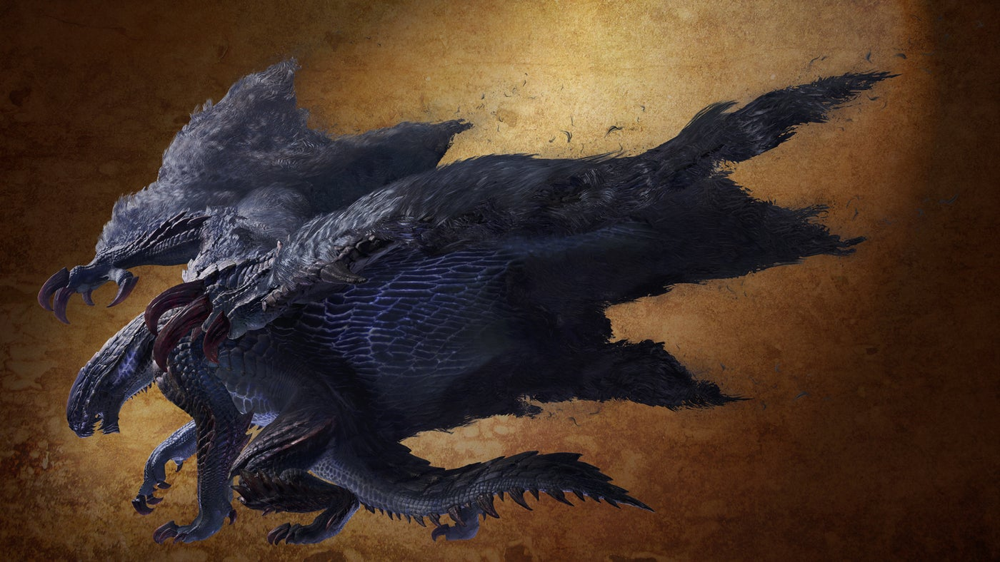
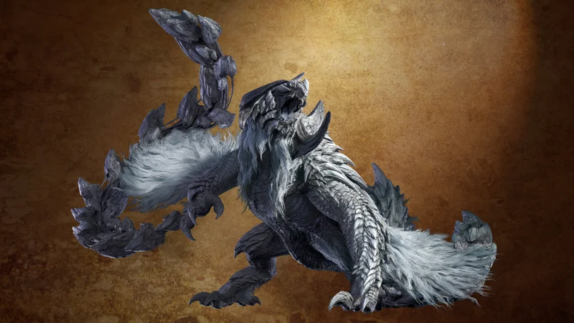

Apex Rey Dau
19 de março de 2025

O Rey Dau é um monstro voador que aparece no jogo Monster Hunter Wilds. Ele é um grande predador que vive nas Planícies do Vento.
Características:
- É um wyvern voador que usa poderes baseados em trovão.
- É hostil e territorial, atacando qualquer intruso que avistar.
- Armazena, amplifica e descarrega a forte eletricidade da tempestade.
- Sua descarga de eletricidade em ataques poderosos é uma ameaça para os caçadores mais experientes.
Aparência:
- Durante a tempestade, pode ser visto um arco de brilho dourado e roxo.
- Realiza uma dança aérea espetacular e despenca com força avassaladora.
Apex Ult Duna
19 de março de 2025

Um Leviatã que governa a Floresta Escarlate como seu predador de ápice.
Características:
- Se protege com seu véu protetor.
- Quando machucado, seu véu se rompe e mostra seu corpo.
- Utiliza ataques baseados no elemento Água.
Aparência:
- Sua pele é coberta por um véu que ao mesmo tempo é duro e maleavel.
Apex Nu Udra
19 de março de 2025

Nu Udra é um monstro cefalópode do jogo Monster Hunter Wilds. Ele é hostil e habita a Bacia Oleídea.
Características:
- É um monstro coberto de oilsilt.
- Quando enfurecido, ele ignita o revestimento, transformando-se em uma criatura de fogo.
- Possui olhos e muitos braços que se presumem serem órgãos sensoriais.
- Utiliza ataques baseados no elemento Fogo.
Aparência:
- Um polvo de cor escura igual petróleo.
Gore Magala
19 de março de 2025

Gore Magala é um wyvern muito único, compartilhando traços e semelhanças com os Elder Dragons, possuindo seis membros, incluindo as asas em suas costas.
Características:
- Seu corpo é coberto por placas de exoesqueleto escuro.
- Possui sensores escondidos que estão dobrados ao lado de sua face.
- Suas asas, cobertas de pêlo negro que lembram uma capa esfarrapada.
Aparência:
- Aparenta a morte, uma sombra escura onde passa deixa seu rastro.
Arkveld
19 de março de 2025

O Arkveld é um Wyvern Voador conhecido como o "Espectro Branco".
Características:
- possui um corpo coberto por escamas cinza-claras, pelagem branca e placas de armadura.
- Sua cabeça é adornada por chifres que se curvam para baixo, semelhantes aos de um carneiro.
- Suas asas são equipadas com garras e possuem apêndices semelhantes a correntes ósseas que podem se estender e retrair conforme sua vontade.
Aparência:
- Conhecido como espectro branco, um mortifero predador que pode acabar com a vida de outros monstros tão forte quanto ele.
Voltar ao topo